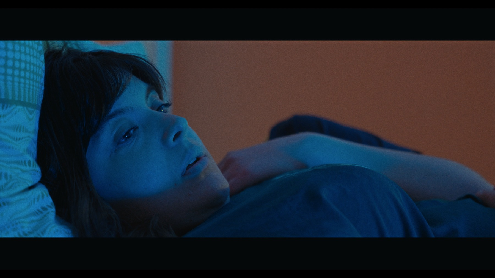
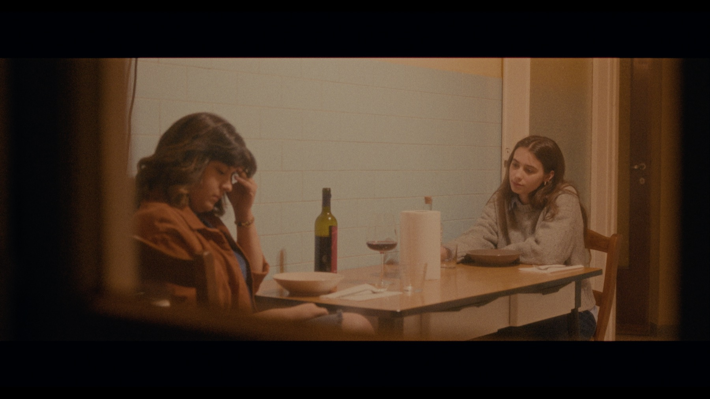
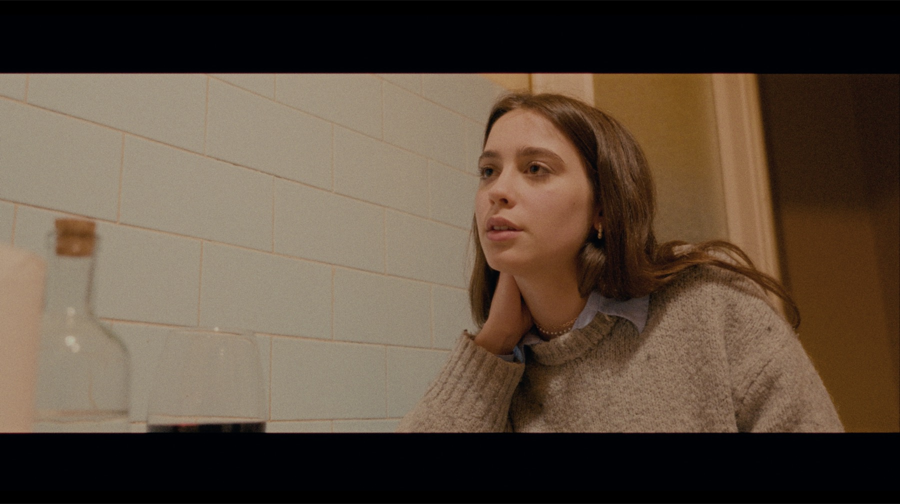

Short Films · 01
Short Film · 2025
Directed by Tano Lenzo Director of Photography / Camera — Francesco La Rosa
OVER 140K VIEWSFONDENTE is a 2025 short film directed by Tano Lenzo, following Lena and Paola, two roommates living away from home and connected by a complex, undefined relationship. Their daily life is shaped by complicity, silences, smiles, and tension. As an unspoken truth begins to surface, their relationship moves toward an emotional confrontation.
It is a story about unspoken love and self-acceptance — and, quietly, a portrait of a generation leaving home: the film grew out of the experience of young Sicilian artists building a creative life away from where they were born, made with a Messina-based crew.
Director of Photography
Francesco La RosaCamera
Francesco La RosaFor FONDENTE, Francesco La Rosa served as Director of Photography and Camera Operator. The visual language is built around handheld movement, calibrated contrast, and a deliberately controlled color palette, allowing the image to follow the characters’ emotional instability while remaining intimate and precise.
The camera was worked handheld throughout — its unstable, mobile quality reflects emotional turbulence and fragility rather than technical looseness. That photography works in close relationship with Tano Lenzo’s direction: controlled contrast and a deliberate palette support the film’s intimate tone, making the characters’ inner states visible without over-explaining them.
FONDENTE adopts a deliberately nonlinear and layered narrative structure. Its handheld camera moves with an unstable but purposeful energy, reflecting the emotional uncertainty at the center of Lena and Paola’s relationship. Calibrated contrast and a controlled palette create a visual language that remains intimate, mobile, and unresolved.

Selected frame · FONDENTE, 2025
Kitchen table · FONDENTE, 2025
Interior · FONDENTE, 2025FONDENTE
Short film · 2025
Submitted to five festivals in Rome at the time of publication.
FONDENTE has passed 140K views
For films and visual projects where atmosphere, people and narrative matter as much as the final image.